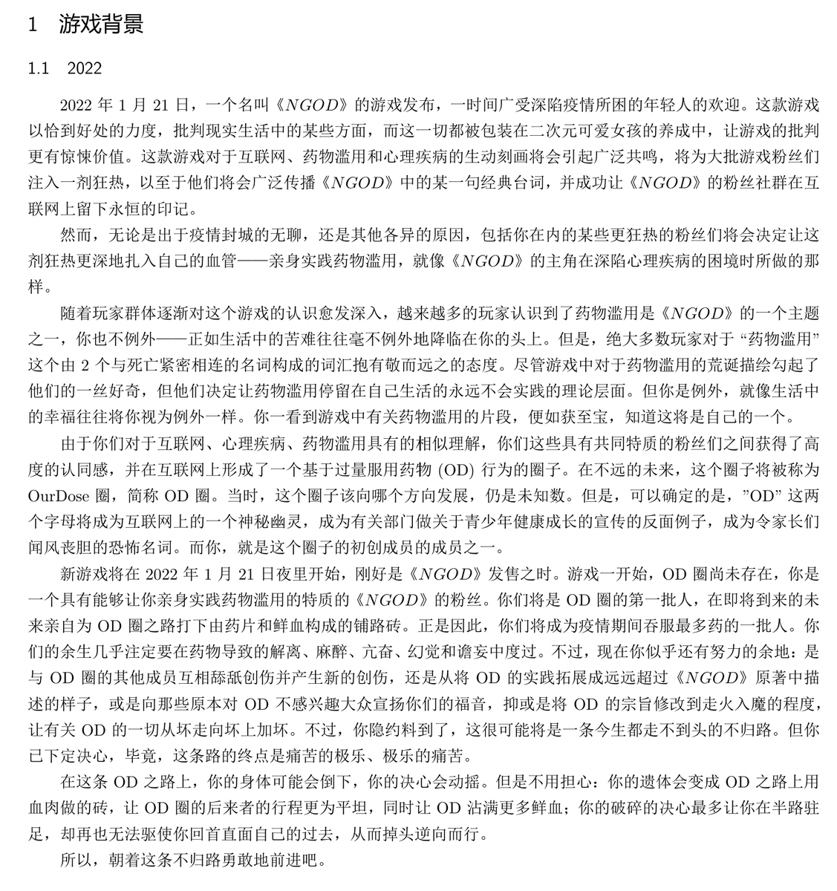

第三段居然没写完就发出来了😦
算了，不重发了，反正还有很多需要改的()
看了这一段文字，已经满脑子都是OD这俩字母了。还有一堆超长句需要打断，等等
不过再重申一遍，我的认知可能有偏差，如果你觉得不好，请务必提出，谢谢!🥰

算了，不重发了，反正还有很多需要改的()
看了这一段文字，已经满脑子都是OD这俩字母了。还有一堆超长句需要打断，等等
不过再重申一遍，我的认知可能有偏差，如果你觉得不好，请务必提出，谢谢!🥰

#OurDose2022 开发日志#1
《OurDose2022》游戏背景介绍
一段非常阴暗的文字👁
非最终版本，尚未校对，请忽略某些用词不当。但是你如果觉得有些内容不合适，或者有些内容应该被加入，请让我知道🥹
(话说《主播女孩重度依赖》在美国等国家的译名是Needy Streamer Overload，简称NSO，所以不用担心侵权()) https://t.co/mRObX9B1ki
《OurDose2022》游戏背景介绍
一段非常阴暗的文字👁
非最终版本，尚未校对，请忽略某些用词不当。但是你如果觉得有些内容不合适，或者有些内容应该被加入，请让我知道🥹
(话说《主播女孩重度依赖》在美国等国家的译名是Needy Streamer Overload，简称NSO，所以不用担心侵权()) https://t.co/mRObX9B1ki